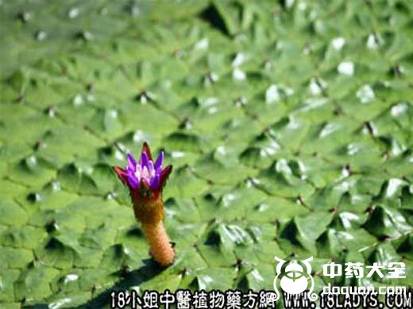
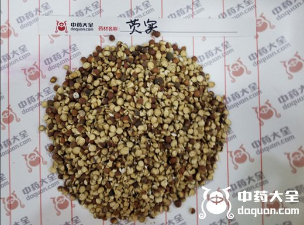

芡实(中草药名称:鸡头米)(科目:睡莲科)


【中药概述】
芡实为睡莲科草本植物芡的成熟种仁。甘、涩，平。归脾、肾经。
1.补脾止泻：用于脾虚泄泻，日久不愈之证，如(参苓白术散)。
2.固肾涩精：用于肾虚精关不固，遗精早泄，小便频数或尿浊等，常与山茱萸，莲须，金樱子，白蒺藜等配伍;治遗尿，可与桑螵蛸，益智仁等配伍。如(<洪氏集验方>水陆二仙丹)、(金锁固精丸)。
3.用于湿热带下或脾肾虚弱的带下，如(易黄汤)。
【药效鉴别】
芡实补而不腻，涩而不滞，功能与金樱子相近，配用能加强固肾涩精、缩尿及涩肠止泻止带作用。芡实长于涩肠止泻止带。
【药理作用】
有健胃、收敛、滋养强壮作用。
【临证应用】
芡实粉粥：粳米100g煮烂，入芡实60g，加水调成糊。对脾肾不足，遗精带下，脾虚久泻者有良效。
【化学成分】
含淀粉，蛋白质，脂肪，粗纤维，钙、磷、铁，维生素B1、B2、C，胡萝卜素，烟酸等。
【用量用法】
8——20g，水煎服。或入丸散剂。
【使用注意】
溺赤便秘，食不运化等忌用。
以上为芡实的功效与作用，相信您一定对芡实这种中药材有所了解。